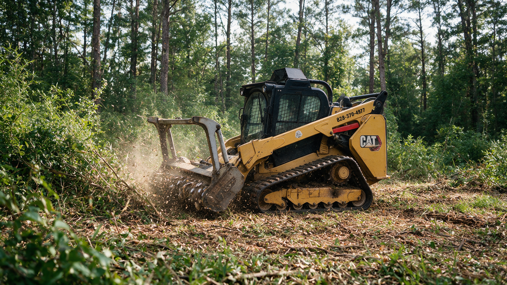

Hunting Land & Food Plot Clearing in Charlotte, NC
Most hunting tracts within reach of Charlotte are thick, young woods: cutovers that grew back, pines with a briar understory, or creek bottoms choked with privet. Deer love the cover, but there's nowhere to plant, nowhere to see, and no quiet way to reach a stand.
We open hunting land with a forestry mulcher, cutting food plots, shooting lanes, and access trails while leaving the bedding cover and the surrounding woods intact. The work is timed so your plots are ready when it's time to plant.
- Plots sized & shaped for your tract
- Shooting lanes cut to your stand
- Done ahead of planting season
Get a Free Food Plot Clearing Estimate
Tell us about your tract and what you'd like opened up. We'll call within one business day.
Thanks, we've got it.
Thanks. We'll call within one business day to set up a time to walk the tract with you.
- Owner on Every JobHe walks the tract and runs the mulcher
- Licensed & InsuredCertificates provided on request
- Free On-Site EstimatesWe walk plots & lanes with you
- Hunter-Minded LayoutPlots, lanes & quiet access
What Our Food Plot Clearing Process Is
A plot in the wrong spot doesn't help anyone. These four steps put the openings where they'll fit how you hunt.
-
01
Walk the Tract
We look at bedding cover, travel routes, wind, the sunlight each spot gets, and where your stands are or will be.
-
02
Flag Plots & Lanes
We flag plot edges, shooting lanes from each stand, and a quiet access route that won't spook deer from their beds.
-
03
Mulch the Openings
Brush and small trees are mulched in place and stumps are ground low so you can work the ground afterward.
-
04
Hand Off for Planting
We walk the finished plots with you so you can lime, work the soil, and plant on your schedule.
Where We Serve for Food Plot Clearing
We clear hunting tracts on Charlotte's rural outskirts and in the nearby counties. Town pages are coming. For now, the main forestry mulching page covers the full service area.
Opening Hunting Land Without Losing What Makes It Good
Tracts on the Edge of the City
Charlotte keeps growing outward, but within a reasonable drive you'll still find hunting land in rural Union, Cabarrus, Iredell, and Gaston Counties and along the southern edge of the region. Much of it is family land, lease ground, or a few dozen acres bought as a getaway. These tracts tend to have the same problem: plenty of deer cover and nowhere to plant or see. Opening a few well-placed spots changes how the whole property hunts.
Sizing and Shaping the Plot
Bigger isn't always better. A small, hidden kill plot tucked against bedding cover can produce more daylight sightings than a big open field, while a larger plot can feed deer through the season and handle browsing pressure better. We'll talk through what you want each plot to do. Irregular shapes with curved edges often feel safer to deer than square clearings, and a plot that gets at least several hours of direct sun will grow a far better crop.
Shooting Lanes
Shooting lanes are narrow, deliberate cuts from a stand out into the woods, giving you a clean look at a trail or the edge of a plot. We cut them from the stand outward so the angles match where you actually sit, and keep them narrow enough that the woods still feel like cover to a deer crossing them. Multiple lanes from one stand can fan out to cover different trails.
Quiet Access to Your Stands
Bumping deer on the walk in ruins a hunt. We can cut an access trail that keeps you out of the bedding area and lets you reach your stand quietly, often along a creek edge, a ditch, or the far side of a ridge. A mulched trail is soft underfoot and quieter than walking through leaves and sticks.
Timing Before Planting Season
Plots need time between clearing and planting to lime, work the soil, and catch some rain. If you're planting cool-season plots for fall, schedule the clearing for late spring or summer. For warm-season plantings, late winter is the time to clear. Calling early in the year gives you the best shot at the dates you want, since many hunters are trying to get the same work done at the same time.
Creeks, Burning, and the Ground You're Left With
Bottomland tracts often have creeks running through them, and stream buffer rules may limit clearing near the banks. Mecklenburg has its S.W.I.M. buffers, and neighboring counties have their own rules, so confirm with the county where your land sits. Open burning is tightly restricted in Mecklenburg County, and mulching avoids burning entirely. After clearing, the plot will have a mulch layer and low stumps. Many hunters disk or till before planting to mix in the mulch and get seed into the soil. We'll talk through what the ground will look like so you can plan.


Getting your tract ready for the season?
Tell us where your stands are and what you want to plant. We'll lay out plots and lanes that fit how you hunt.
Plan My Food PlotsOther Services We Provide in Charlotte
Food plot and hunting land clearing is one of eight forestry mulching services we provide around Charlotte. Here's the rest of what we offer, grouped by category.
Why Hunters and Landowners Choose Us to Clear Their Ground
We Think Like a Hunter
Plot placement, wind, sunlight, and quiet access are part of the conversation, not an afterthought.
Cover Stays Where It Matters
We open only what you need and leave bedding cover and the edges deer feel safe in.
Scheduled Around Planting
We plan the clearing so you have time to lime and work the ground before your planting window.
A hunting tract is a balance between cover and openings. We help you find that balance by listening to how you hunt the property, then cutting plots, lanes, and access trails that work together without stripping out the cover that brings deer in.
Charlotte Food Plot Clearing FAQs
How big should a food plot be?
It depends on what you want it to do. Small, hidden kill plots near cover are great for hunting, while larger plots feed more deer and hold up better to browsing. We'll help you decide what fits your tract during the walk-through.
When should I clear for a fall food plot?
Late spring through summer gives you time to lime, work the soil, and plant cool-season crops before fall. For spring or summer plantings, clear in late winter.
Do you clear land outside Mecklenburg County?
Yes. Many of the hunting tracts we clear are in the surrounding rural counties. Tell us where your land is when you request an estimate.
Can you cut shooting lanes from my existing stands?
Yes. We start at the stand and cut outward to match the angles you'll actually be looking from, keeping each lane narrow enough to keep the woods feeling like cover.
Will I be able to plant right after you clear?
You'll have an open area with mulch and low stumps. Most hunters till or disk first to mix the mulch in and get seed into the soil. A soil test and lime are usually worth doing first.
Can you leave cover around the plot?
Yes. We recommend it. A plot with thick cover along its edges feels safer to deer and often gets more daylight use.
Can you clear an access trail to my stand?
Yes. We can cut a quiet trail that keeps you out of bedding areas and lets you reach your stand without bumping deer.
What about creeks on my hunting land?
Many counties have stream buffer rules that limit clearing near creeks. Confirm with the county where your land is located, and we'll keep plots and trails outside any protected area.
How much does food plot clearing cost?
It depends on the number and size of plots, how thick the growth is, the length of lanes and trails, and the terrain. We'll give you a written price after walking the tract.
Take back your overgrown land.
Free walk-through and written estimate for forestry mulching in Charlotte.